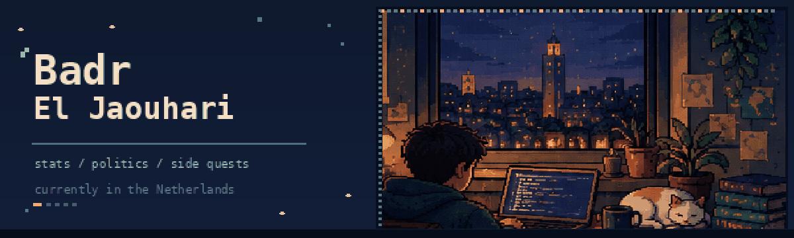
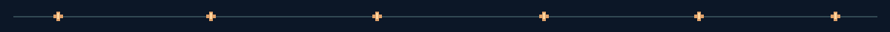

Usually somewhere between statistics, politics, and another side project.
01 / hello
Hey, I'm Badr. I studied international relations and slowly got pulled into statistics. I liked working with political data during my bachelor's, and I wanted to understand the methods properly. I haven't really left politics behind. I just spend a lot more time in R now.
I'm originally from Morocco and currently based in Voorburg, near The Hague. I'm finishing an MSc in Methodology, Statistics and Data Science at Utrecht University, following the European Master in Official Statistics (EMOS) track. Most of my work lately involves missing data, statistical modelling, and finding out what happens when a method looks good on paper but less good in a simulation.
Outside of that, I like maps, history, philosophy, writing, and the occasional game-design rabbit hole.
02 / on my desk lately
- Master's thesis at Statistics Netherlands (CBS): looking at machine-learning approaches to automatic editing of business survey data, in the Methodology Department.
- Research at Utrecht University: recently worked on multilevel missing-data methods, including a custom mice imputation function using glmmTMB.
- Next, starting November 2026: research student-assistant role on mixed-language speech recognition in LENA recordings.
- After hours: small data projects and essays on Substack.

03 / places I've learned things
| 2025 to 2027 | Utrecht University MSc Methodology, Statistics and Data Science. EMOS track. Honours Council. |
| 2022 to 2025 | Mohammed VI Polytechnic University BA International Relations, minor Data Analytics for Politics. |
| 2025 | Sciences Po Lyon Diploma of Political Studies. |
A few workplaces have also shaped how I think about data:
- Statistics Netherlands (CBS), 2026 to present: Methodology graduation intern.
- Utrecht University, February to October 2026: research trainee in missing data.
- Joint Impact Model Foundation / FMO, March to September 2026: emerging markets impact analysis and model testing.
- UCESA, 2024: African international partnerships and climate mobility research.
- SNRT, 2023: international agreements and annual report.
04 / projects
A few things I've worked on. Some are full analyses; others started as experiments or course projects.
Multilevel imputation with glmmTMB + mice
An R imputation function and a simulation study comparing it with an existing multilevel approach.
Bayesian FIFA ranking analysis
Bayesian regression and a Gibbs sampler written in R.
Missing household income in Europe
Survey weights and multiple imputation in five countries.
Five Minutes to Midnight
A Cold War strategy board-game paper prototype about influence and nuclear risk.
HousingyBot
A Python template for monitoring permitted public listings.
Child stunting in Marrakech-Tensift-El Haouz
DHS analysis using Stata and logistic regression.
Predicting cat weight
Random forests and linear regression on veterinary records.
A few other experiments live in my repositories.
05 / the toolbox
| Most-used languages | R, Python, SQL |
| Statistical software | Stata, Mplus, JAGS |
| R and reproducibility | Quarto, mice, glmmTMB, ggplot2, tidyverse |
| Python and ML | pandas, NumPy, NLTK, scikit-learn, random forests |
| Methods | Bayesian inference, multilevel models, multiple imputation, Monte Carlo simulation, survey data analysis |
| Also | C++, JavaScript, CSS, Blender, Adobe Creative Cloud |
I like learning tools when a project actually gives me a reason to use them. The list changes pretty often.
06 / some highlights along the way
- Utrecht Excellence Scholarship, fully funded two-year master's scholarship.
- Nudgeathon Morocco winner in 2023, with a water-saving proposal.
- National finalist, Olympiads of Informatics.
- Best Project Award, Design My Future Morocco 2056 in 2019.
- Leadership Lab fellow, US Embassy in Morocco (60 selected from over 1,200).
- Founded Artscape UM6P and helped organize Local Conference of Youth Morocco 2025.
07 / when I'm not in RStudio
Usually reading something about politics or philosophy, trying to write, learning a language, playing tennis, swimming, or messing with a design idea in Blender. Arabic is my first language; I also speak English and French, and I'm learning Dutch and German. I also enjoy bringing people from different fields together.
I write on Substack when I have an idea I want to explore beyond a figure or a regression table.
One more thing: the tiny arcade
The optional contribution snake will appear on the live profile once the GitHub Action runs.